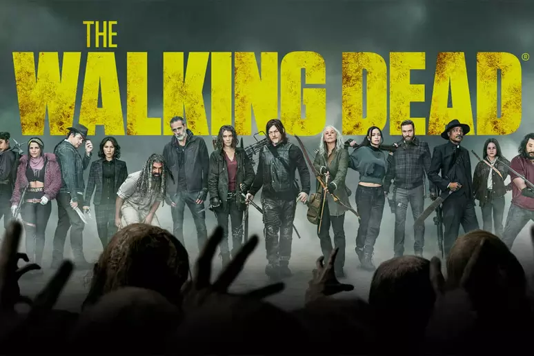

The Walking Dead
Gêneros: Serial, Terror, Apocalipse zumbi, Drama, Ficção pós-apocalíptica, Suspense, Dramatic programming

Sinopse The Walking Dead
Baseado na história em quadrinhos escrita por Robert Kirkman, este drama potente e visceral retrata a vida nos Estados Unidos pós-apocalíptico. Um grupo de sobreviventes, liderado pelo policial Rick Grimes, segue viajando em busca de uma nova moradia segura e distante dos mortos-vivos. A pressão para permanecerem vivos e lutarem pela sobrevivência faz com que muitos do grupo sejam submetidos às mais profundas formas de crueldade humana. Rick acaba descobrindo que o tão assustador desespero pela subsistência pode ser ainda mais fatal do que os próprios mortos-vivos que os rodeiam.Alguns episódios:
Episódio 1: "Days Gone Bye"Kirkman, Robert, Tony Moore, e Frank Darabont. "The Walking Dead: Days Gone Bye." AMC, 2010.
Episódio 2: "Guts"Kirkman, Robert, Tony Moore, e Frank Darabont. "The Walking Dead: Guts." AMC, 2010.
Episódio 3: "Tell It to the Frogs" Kirkman, Robert, Tony Moore, e Frank Darabont. "The Walking Dead: Tell It to the Frogs." AMC, 2010.
Episódio 4: "Vatos" Kirkman, Robert, Tony Moore, e Gwyneth Horder-Payton. "The Walking Dead: Vatos." AMC, 2010.
Episódio 5: "Wildfire" Kirkman, Robert, Tony Moore, e Gwyneth Horder-Payton. "The Walking Dead: Vatos." AMC, 2010.
Se quiser assistir The Walking Dead, Clique Aqui
Fontes utilizadas na página: wikipedia e adorocinema